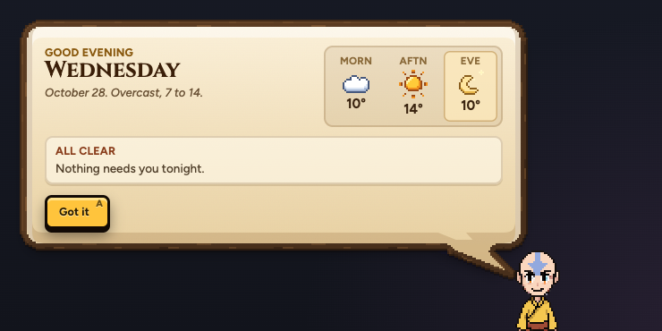
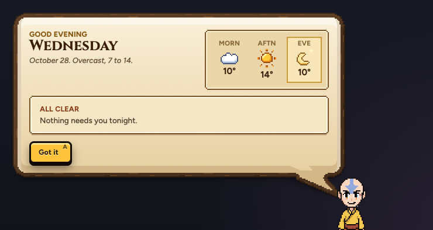
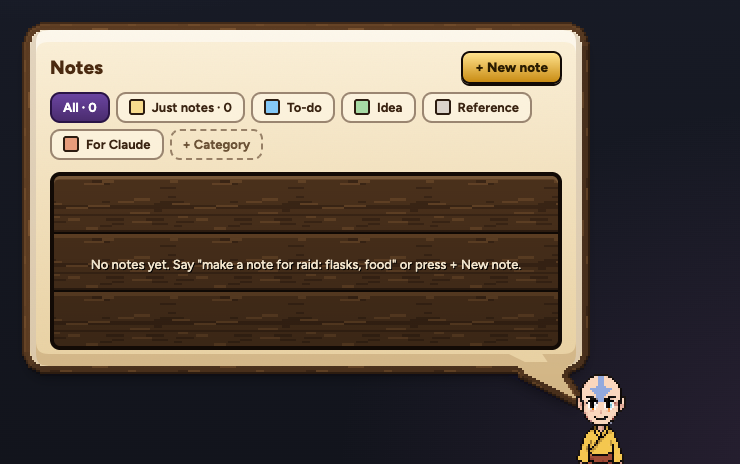
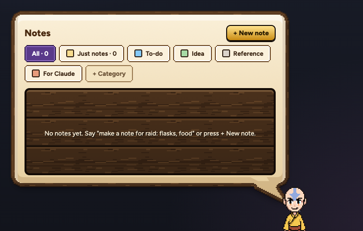
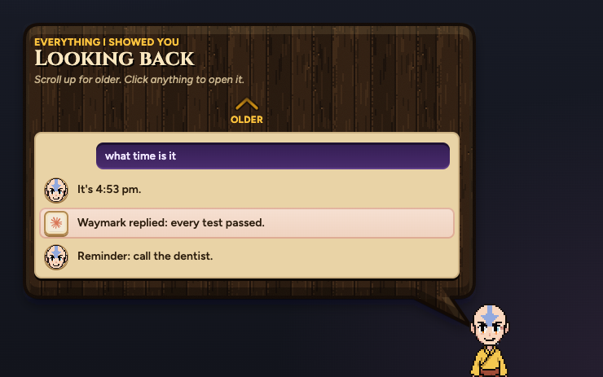
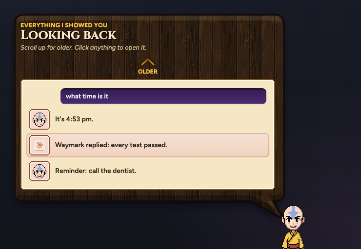
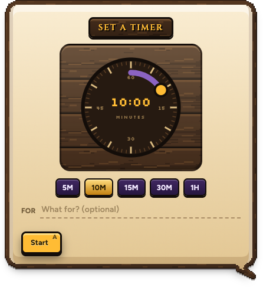
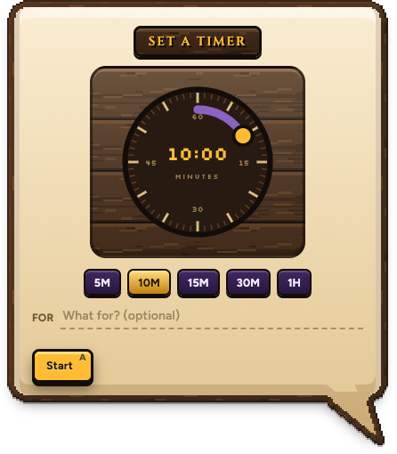
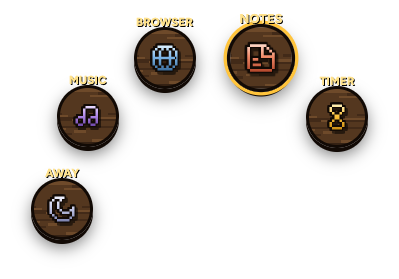
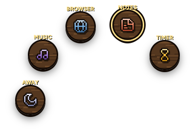

aBRIEF, TODAY

The boxes inside Aang's bubble get the same pixel edge as the bubble itself, and the wheel stops going blurry.
The real pages, before and after. The words in Look back are examples.
Stepped pixel corners and a dark outline, drawn at exactly 2x, instead of smooth rounded boxes.


The weather box and the "All clear" slip.


The category chips. "+ Category" keeps a lighter frame so it still reads as "add one".


The day's paper, the faces and Claude's rows.

A stub in the corner.

Already fixed on your Mac: the bubble sits a little further from his cheek, so its tail is a tail again.

The slot you point at grows to 1.1x and its pixel icon goes soft.

It lifts 3 px with a light gold rim, and stays crisp.